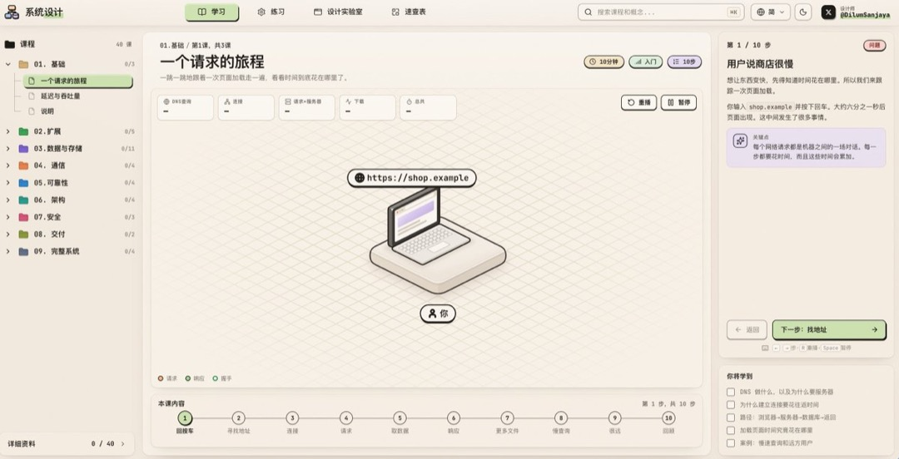
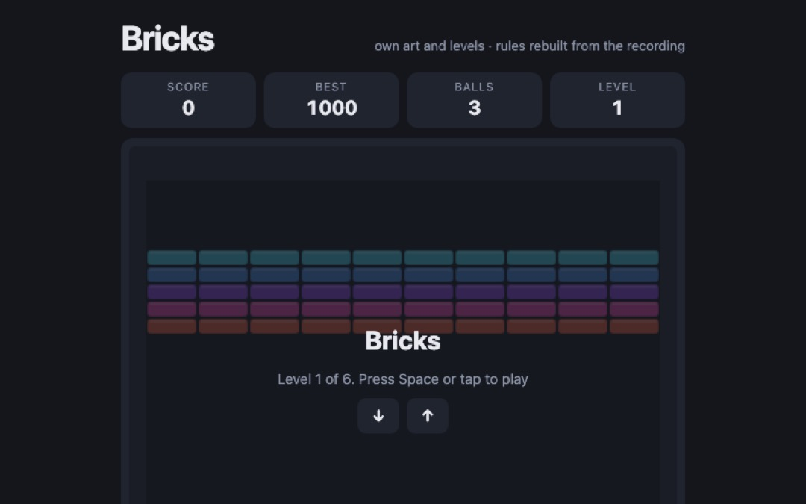
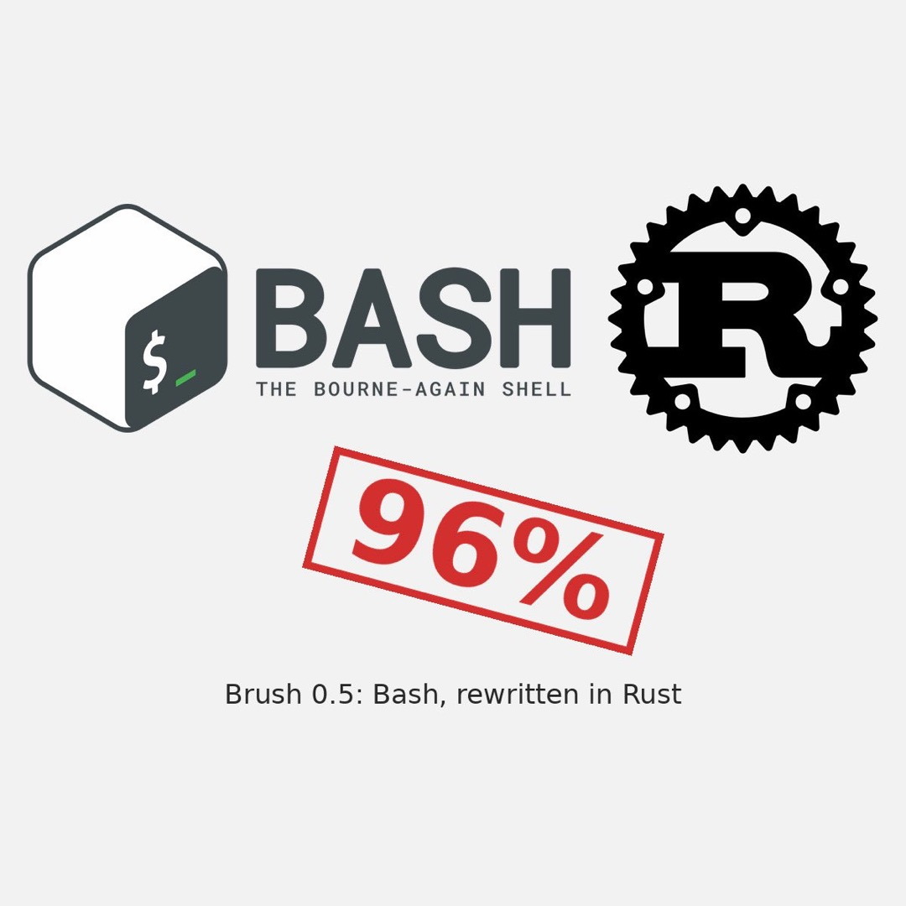
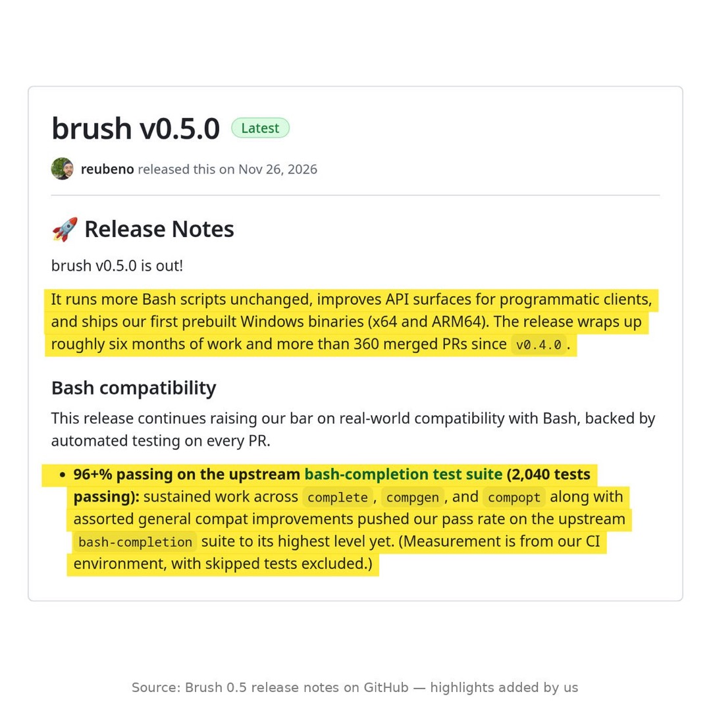
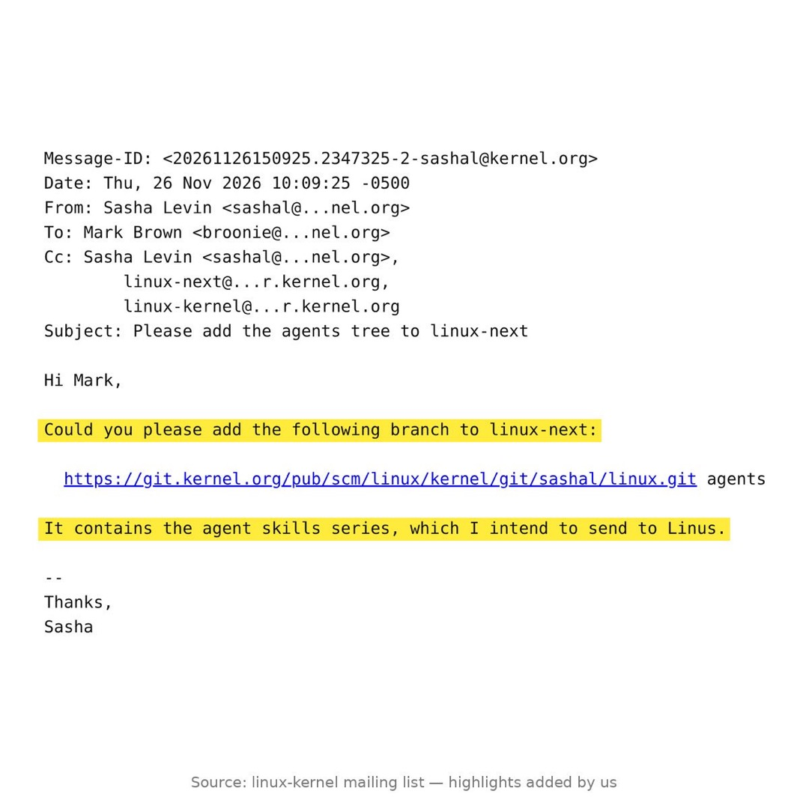

本期速览
05 rea-games 用回放磁带逐帧校验游戏行为
06 Brush 0.5 兼容 Bash 测试超 96%
07 Obsidian 中文界面启动慢 3 秒
08 Linux 内核将内置 AI 编码代理指令
01｜SwarmRSI 用共享研究图继承实验结果
来源（X） · @yibie · 2026-11-27 16:30
▍awesome-autoresearch（715 → 717）
1. SwarmRSI（arXiv 2610.20431）：agent 提出假设、跑真实实验，把包括失败在内的每个结果写进一张后续 agent 会继承的共享研究图 —— 三个基准都有数字，而结果表里保留了自己输掉的那一行（金牌率 45.5%，基线 77.3）。
2. K-Dense BYOK（1,478⭐）：桌面应用 —— 研究助手跑在你自己的机器上、用你自己选的账号与 API key。这是本列表里唯一一种「反向」安排：其余 co-scientist 都是托管的。
▍awesome-jev（741 → 743）
1. CVE triage in Kafka Streams（PR #410）：一个拓扑问 Jev 一个 Choice 问题（新 CVE 的严重度），置信度低于 0.6 的进人工复核。文中给的是真实调用：同一个 CVE 问 11 次回来 0.61–0.65，十个描述含糊的 CVE 里八个低于阈值。
2. DecisionPivot（arXiv 2610.28522）：诊断型基准 —— 用只有步骤顺序不同的对照对，放在「系统必须做决定」的控制点上；结论是公开分数相近的模型，在它上面差异极大。
▍awesome-rea（102 → 103）
1. Breath of the Wild（2,510⭐，7,901 文件）：这条是补漏 —— 一个月前查 zeldaret 时就测到 8 处 trailer，与后来收录的 Mario Kart 64 同等，但当时没写下。
📂 https://github.com/yibie/awesome-rea · https://github.com/yibie/awesome-jev · https://github.com/yibie/awesome-autoresearch
📊 103 / 743 / 717
02｜Designed to Scale 动画演示系统设计概念
来源（X） · @shenxiankk · 2026-11-27 11:15
我发现了一个免费的系统设计交互式学习平台，把那些原本抽象的技术概念，统统转化成了能亲手摆弄的动画演示！
从数据库索引、分片、一致性哈希，到负载均衡、缓存、消息队列、分布式架构，都可以一边观看动画一边领会。
准备后端开发、架构师、系统设计面试的朋友，确实值得完整过一遍！
在线学习：https://designed-to-scale.vercel.app

03｜udp2cal 麦克风串流内存占用仅 5MB
来源（X） · @appinn · 2026-11-27 17:18
udp2cal：电脑内存占用只有 5mb 的麦克风串流软件
https://meta.appinn.net/t/topic/97073
04｜NodeWarden 借 Cloudflare 自建密码库
来源（X） · @appinn · 2026-11-27 17:17
05｜rea-games 用回放磁带逐帧校验游戏行为
来源（X） · @QingQ77 · 2026-11-27 17:15
: https://github.com/erkamyaman/rea-games

06｜Brush 0.5 兼容 Bash 测试超 96%
来源（X） · @sysxplore · 2026-11-27 17:02
中文译文
用 Rust 重写的 Bash，现在通过了超过 96% 的上游 bash-completion 测试套件。
Brush 0.5 已发布。其开发者表示，它可以在不做修改的情况下运行更多 Bash 脚本，并且已针对 fzf、atuin、mise 和 nvm 等真实环境进行了测试。
该版本总结了六个月的工作和超过 360 个已合并的拉取请求，并首次提供了 Windows 构建版本。
其兼容性测试套件从约 2,100 个用例增长到超过 3,600 个。
原文
Bash, rewritten in Rust, now passes over 96% of the upstream bash-completion test suite.
Brush 0.5 is out. Its developers say it runs more Bash scripts unchanged, and it's tested against real setups like fzf, atuin, mise and nvm.
The release wraps up six months and more than 360 merged pull requests, and ships the first Windows builds.
Its compatibility test suite grew from about 2,100 cases to over 3,600.


07｜Obsidian 中文界面启动慢 3 秒
来源（X） · @Carlos_Gong · 2026-11-27 16:57
注意到 Obsidian 在中文界面下启动得特别慢，看了一下 break down，有 3294ms 用在了 DOM Parse 上。
换回英文界面以后，DOM Parse 降到了 200ms 以下。
看起来 Obsidian 的中文用户生活在水深火热之中，只是我一直没被影响到。
08｜Linux 内核将内置 AI 编码代理指令
来源（X） · @sysxplore · 2026-11-27 16:33
中文译文
Linux 内核即将为 AI 编码代理发布自己的操作手册。
Sasha Levin 昨天请求将他的“agents”分支加入 linux-next。该分支包含“我打算发给 Linus 的”系列补丁。
转折在于：其中一项技能来自 Ted Ts'o，这位维护者本周因其 AI 修复 EXT4 的拉取请求让 Torvalds 对他说“告诉你的 AI 伙伴把状态调整好”。
这些技能告诉代理如何查找 Fixes 和 stable 标签、搜寻已修复 bug 的其他副本、编写提交信息以及编写 KUnit 测试。
如果 Torvalds 接受，预计它将在 12 月底的 Linux 7.5 合并窗口中出现。
原文
The Linux kernel is about to ship its own instruction manual for AI coding agents.
Sasha Levin asked yesterday for his "agents" branch to join linux-next. It holds the series "which I intend to send to Linus."
The twist: one of the skills comes from Ted Ts'o, the maintainer whose AI-fix EXT4 pull got Torvalds telling him to "tell your AI companion to get its act together" this week.
The skills tell agents how to find Fixes and stable tags, hunt for other copies of a fixed bug, write commit messages and write KUnit tests.
It's expected in the Linux 7.5 merge window in late December, if Torvalds takes it.
